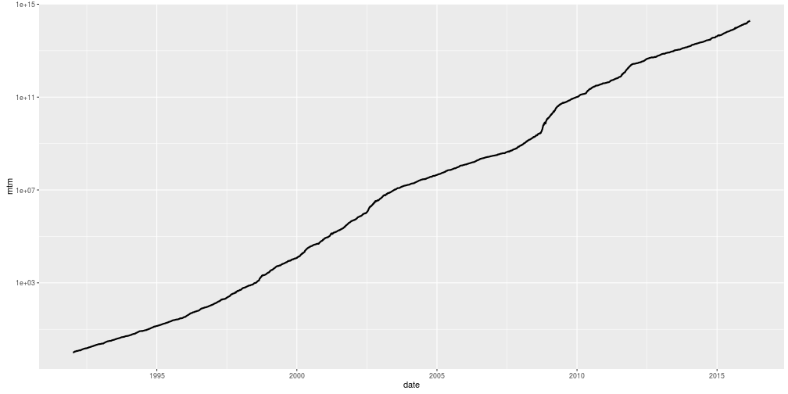

My background
- Former applied mathematician. (IUB graduate!)
- Quant Programmer & Quant Strategist 2007-2015 at two small hedge funds.
- Almost pure quant funds, ML-based, in U.S. ("single name") equities and volatility futures.
- Tried many ML technologies to construct strategies: SVM, random forests, GP.
- Also traditional statistical approaches: plain old regression.
- Whatever the approach, we used backtests. (GP used them heavily.)
What makes a profitable strategy?
- Need prediction of future price movements.
But also:
- Turn the predictions into trades.
- No, really, turn the predictions into trades.
- Eliminate or reduce exposure to certain risks.
- Control trade costs. (commissions, short financing, market impact.)
Hard to estimate the effects of the different moving parts separately.
So simulate your trading historically: A backtest.
Backtesting basically implies quantitative strategies: you cannot backtest discretionary trading.
Backtests
A backtest probably should:
- simulate the effects of your actions (orders submitted).
- simulate the actions of the world (fills, commissions, corporate actions, etc.).
- translate in an obvious way to a real trading strategy.
- provide an absolute guarantee of time safety.
Creating a good backtesting environment requires:
- Software engineering: balance time safety, computational efficiency and developer sanity.
- Domain knowledge and data: How should you simulate fill? How do corporate actions work?
- Great statistical powers: How do you interpret the results? How do you avoid overfitting?
- Good intuition and sleuthing abilities: What new thing is broken?
Different kinds of backtests

Garbatrage
Use Bayes' Rule:
- Devising a consistently profitable trading strategy is known to be hard.
(The EMH posits that it is essentially impossible.) - Bugs are easy to make. A good programmer will make several a day.
If your backtest looks profitable, what is the likelihood the strategy is really profitable?
If you are exploring a new asset class, using a new fill simulator, using new code, testing a new strategy, or reading a paper from a third party, and the backtest looks great, it's probably a bug.
An example
Should three day old tweets give you this?

Time Travel
The most common error in backtests is time travel: use of future information in simulations.
Time travel occurs for many reasons:
- Backfill and survivorship bias.
- Representation of corporate actions: dividends, splits, spinoffs, mergers, warrants.
- Think-os and code boo boos.
Time travel is easy to simulate, but hard to implement!
Survivorship and Backfill
- Classic survivorship bias: trading on a universe of stocks defined by present membership in some index, say.
- Data vendors often backfill data for companies or remove them. (You can test for this, or just ask them!)
- Vendors may do weird things to deal with mergers (or you may!)
Corporate Actions
- Corporate actions are notoriously time-leaky.
- Problems stem from representing asset returns as a single time series: in reality, they branch across time.
- Corporate actions are just hard to model.
For example, (back) adjusted closes. Investing inversely proportional to adjusted close gives a time-travel 'arb'.

The ML Hacker Trap
- Align returns to features for training ML models.
- Forget that the model is timestamped to the returns.
- A warning: the more often I retrain, the better my model! (Often with an excuse for 'time freshness'.)

The ML Hacker Trap
- Align returns to features for training ML models.
- Forget that the model is timestamped to the returns.
- A warning: the more often I retrain, the better my model! (Often with an excuse for 'time freshness'.)

Break!
Time permitting, talk about overfitting later.
Turn it over to Zak for the next part.
Again!?

Plain Old Overfitting
When backtests are fixed, you can move on to overfitting.
Overfitting has two flavors here:
- a.
- b.
Equations:
\[ x = \sum_{0 \le i \le 100} i^2 \]